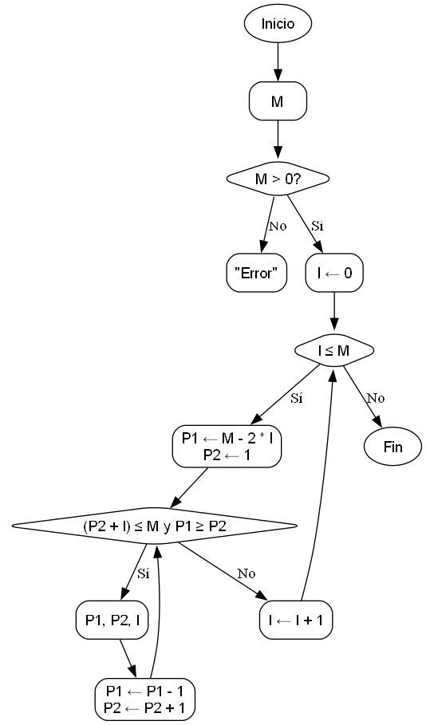

Construya un mapa de memoria para N = 5, interprete el resultado y marque las estructuras algorítmicas utilizadas en el diagrama.
Diagrama de flujo

Programa equivalente en Java
// src/Practica3_44.java
public class Practica3_44 {
public static void ejecutar(int N) {
if (N <= 0) {
System.out.println("Error: N debe ser mayor que 0.");
return;
}
int I = 0;
while (I <= N) {
int P1 = N - 2 * I;
int P2 = I;
while ((P2 + I) <= N && P1 >= P2) {
System.out.println("P1=" + P1 + " P2=" + P2 + " I=" + I);
P1--;
P2++;
}
I++;
}
}
}
a) Mapa de memoria para N = 5
| Iteración (I) | P1 inicial | P2 inicial | Valores impresos (P1,P2) |
|---|---|---|---|
| 0 | 5 | 0 | (5,0) (4,1) (3,2) |
| 1 | 3 | 1 | (3,1) (2,2) |
| 2 | 1 | 2 | (1,2) |
| 3+ | Negativos | Fuera de rango | No imprime |
b) Interpretación
El algoritmo genera todas las combinaciones posibles de P1 y P2
para cada valor de I, dentro del rango definido por N.
Se observa que los valores de P1 decrecen y los de P2 aumentan
de manera simétrica, imprimiendo las parejas válidas que cumplen la condición.
c) Estructuras utilizadas
- Estructura condicional: if (N > 0)
- Estructura repetitiva externa: while (I ≤ N)
- Estructura repetitiva interna: while ((P2 + I) ≤ N && P1 ≥ P2)